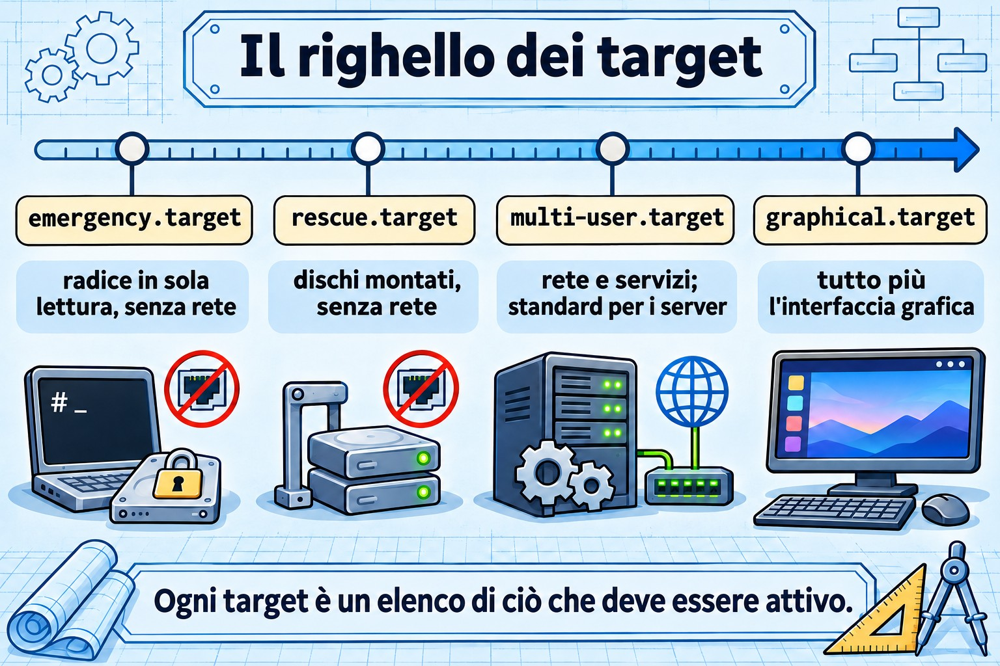
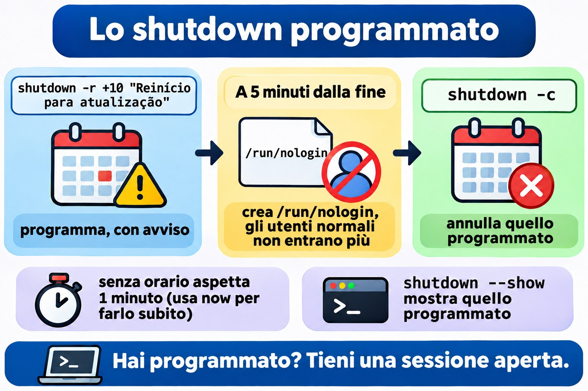
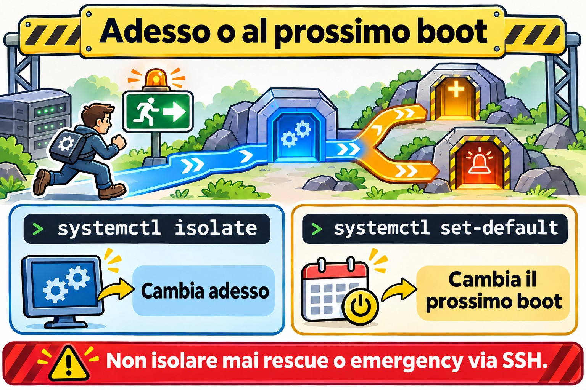

Lezione 4.3 · Target, spegnimento e riavvio
Nella 4.2 hai avviato e fermato i servizi uno per uno. Oggi cambi modalità all'intera macchina: dalla modalità normale a quella di manutenzione, e ritorno. Impari anche a spegnere e riavviare un server senza prendere di sorpresa nessuno.
Il cuore di questa lezione: un target è una modalità di funzionamento della macchina, un pacchetto di unit.
get-defaulteset-defaultagiscono sulla modalità del prossimo boot;isolatecambia la modalità adesso.rescueeemergencysono le modalità di manutenzione, ed entrambe chiedono la password di root. Per spegnere o riavviare:systemctl poweroffesystemctl reboot, oppureshutdownquando vuoi un orario e un avviso.
| Scheda | |
|---|---|
| Modulo | M4 · Boot e systemd, lezione 3 di 4 |
| Quando | Settimana 9 |
| Durata | circa 1h30 |
| Prerequisiti | Lezioni 4.1 e 4.2 |
| Lab | rocky-lab (201) e debian-lab (202), con la console di Proxmox aperta |
| Snapshot | m4a3-inicio e m4a3-fim |
1 Riscaldamento
Rispondi prima di leggere. Le risposte sono nelle Soluzioni, alla fine della lezione.
- Esegui
sudo systemctl isolate rescue.targetin una sessione SSH. Cosa succede alla tua sessione? - Qual è la differenza tra
systemctl set-defaultesystemctl isolate? - Cosa fa
shutdown -r +10, e come lo annulli?
2 Perché conta
| Situazione reale | Cosa risolve |
|---|---|
Hai toccato /etc/fstab, hai riavviato e il server non parte | Entrare in emergency.target dalla console |
| Una manutenzione che richiede la macchina senza servizi attivi e senza utenti | rescue.target |
| Riavviare il server di un cliente alle 23, avvisando chi è collegato | shutdown -r 23:00 "mensagem" |
| Qualcuno ha installato un'interfaccia grafica su un server e ora parte in modalità grafica | systemctl set-default multi-user.target |
3 Modello mentale
Un target è l'elenco di ciò che deve essere attivo perché la macchina si trovi in una certa modalità. Pensalo come un righello, da quella con meno cose attive a quella con più cose attive:
emergency → rescue → multi-user → graphical
raiz só discos do rede, sshd, multi-user
leitura, fstab, todos os + tela
shell root shell root serviços gráficaIl multi-user.target è il server normale: rete, sshd e i tuoi servizi, senza schermata grafica. È il predefinito di qualsiasi server. Il graphical.target è tutto questo più la schermata grafica. I due a sinistra sono modalità di manutenzione: non hanno né rete né sshd, solo una shell di root sulla console.
Hai due leve, uguali a quelle della 4.2:
| Leva | Cambia quando | Comando | Parente nella 4.2 |
|---|---|---|---|
| Modalità del prossimo boot | Al prossimo boot | systemctl set-default | enable |
| Modalità di adesso | Adesso, senza riavviare | systemctl isolate | start |
I vecchi runlevel (da 0 a 6) che hai visto nella tabella della 4.1 sono solo vecchi nomi per questi target. Il runlevel 3 è il multi-user.target, e il runlevel 1 è il rescue.target.


4 L'essenziale
Vedere e cambiare il target predefinito
systemctl get-default
sudo systemctl set-default multi-user.target
ls -l /etc/systemd/system/default.targetset-default non fa magie: cambia soltanto un link simbolico, default.target, perché punti al target che hai scelto. Al boot, systemd cerca il default.target e segue il link.
Vedere cosa richiama un target
systemctl list-units --type=target
systemctl list-dependencies multi-user.target | head -20Cambiare adesso: isolate
sudo systemctl isolate multi-user.targetisolate avvia ciò che il nuovo target richiede e ferma tutto ciò che non ne fa parte. Per questo accetta solo i target marcati con AllowIsolate=yes, come multi-user, graphical, rescue, emergency, reboot e poweroff. Con gli altri target rifiuta, con Operation refused, unit may not be isolated.
Scorciatoie che userai più di isolate:
| Scorciatoia | Equivale a |
|---|---|
systemctl rescue | isolate rescue.target |
systemctl emergency | isolate emergency.target |
systemctl default | isolate default.target (torna alla modalità predefinita) |
rescue × emergency
| rescue.target | emergency.target | |
|---|---|---|
Root (/), con un boot diretto | montata in lettura e scrittura | montata sola lettura |
| Altri dischi di fstab | montati | non montati |
Rete e sshd | no | no |
| Chiede la password di root | sì | sì |
| Quando usarlo | manutenzione con il sistema quasi in piedi | fstab rotto, o quando il rescue non parte |
| Vecchio nome | runlevel 1, single | nessun equivalente |
La riga della password è quella che frega anche i più esperti. Entrambe le modalità chiamano sulogin, che pretende la password di root: la tua password di sudo non basta. Se l'account root è bloccato, la modalità di manutenzione non si apre e compare Cannot open access to console, the root account is locked. Controlla prima di averne bisogno:
sudo passwd -S rootSe la seconda colonna è L o LK, l'account è bloccato (locked). P o PS significa che ha una password. Hai dimenticato la password di root? Questo è il tema della 4.4.
Entrare in un target solo per questo boot
In GRUB aggiungi systemd.unit=rescue.target oppure systemd.unit=emergency.target alla riga del kernel. Vale solo per quel boot. Anche i vecchi nomi 1, s e single portano al rescue. Lo farai in pratica nella 4.4; per ora, sappi che esiste.
Spegnere e riavviare
sudo systemctl poweroff # spegne
sudo systemctl reboot # riavvia
sudo systemctl halt # ferma la CPU, ma può non togliere l'alimentazione
sudo shutdown -h now # spegne subito
sudo shutdown -r +10 "Reinício para atualização" # tra 10 min, con avviso
sudo shutdown -r 23:00 # a un orario preciso
sudo shutdown -c # annulla quello programmato
wall "Servidor reinicia às 23h" # messaggio a tutti i terminaliTre dettagli di shutdown:
- Senza orario, aspetta 1 minuto: cioè non è immediato. Per renderlo immediato, usa
now. - Quando mancano 5 minuti, crea il file
/run/nologin, e da lì in poi gli utenti normali non riescono più a entrare. - Per vedere cosa è programmato, usa
shutdown --show. Se la tua versione di systemd non ha questa opzione, leggi/run/systemd/shutdown/scheduled.


I vecchi comandi funzionano ancora e si incontrano nella documentazione datata: init 0 spegne, init 6 riavvia, telinit 1 va nel rescue, e runlevel mostra quello precedente e quello attuale (per esempio, N 3).
Per sapere quando la macchina si è riavviata: who -b, last -x reboot shutdown | head e journalctl --list-boots.
Rocky × Debian
| Rocky 9 | Debian 12 | |
|---|---|---|
| Target predefinito di un server senza GUI | multi-user.target | multi-user.target |
| Account root dopo l'installazione | bloccato, se non hai dato la password di root nell'installer | bloccato, se hai lasciato vuota la password di root |
| Comandi di target e shutdown | uguali (systemd 252) | uguali (systemd 252) |
Le due usano la stessa versione di systemd, quindi i comandi sono gli stessi. In pratica la differenza sta nell'account root, ed è questo a decidere se riesci a entrare in modalità di manutenzione.
5 Lab guidato
Passo 0 · Snapshot e console
Nella shell del nodo Proxmox:
qm snapshot 201 m4a3-inicio
qm snapshot 202 m4a3-inicioApri la console (noVNC) delle due VM nell'interfaccia di Proxmox e lasciala aperta. In questa lezione la rete cadrà di proposito, e la console è la tua unica via di ritorno. In ogni VM:
mkdir -p ~/lab43 && cd ~/lab43Passo 1 · Dov'è la macchina adesso
In entrambe le VM:
systemctl get-default
ls -l /etc/systemd/system/default.target
systemctl list-units --type=target --state=active
sudo runlevelAnnota le risposte in ~/lab43/notas.txt. Il risultato atteso: multi-user.target, un link che punta a /usr/lib/systemd/system/multi-user.target e N 3 nel runlevel.
Passo 2 · Controllare l'account root
sudo passwd -S rootSe compare L o LK, imposta una password di root solo nel lab, digitandola tu stesso, e salvala nel tuo password manager:
sudo passwd rootSenza questo, i passi 3 e 6 si bloccano sul messaggio the root account is locked.
Decidi 1
Sei sulla rocky-lab via SSH, non dalla console, e stai per eseguire sudo systemctl isolate rescue.target. Cosa succede?
- A) Non cambia nulla, e la sessione SSH continua normalmente.
- B) La sessione SSH cade o si blocca, e la console resta in attesa della password di root.
- C) La macchina si riavvia e torna su in modalità rescue.
Scegli un'opzione prima di continuare. Poi eseguilo e guarda cosa succede.
| Se hai scelto | Risultato | Perché |
|---|---|---|
| A | Sbagliato | isolate ferma tutto ciò che non fa parte del rescue, e questo include sshd e la rete |
| B | Giusto | Senza sshd e senza rete, la tua sessione perde la strada. Il rescue apre una shell di root solo sulla console |
| C | Sbagliato | isolate non riavvia: cambia modalità con la macchina accesa |
Da ricordare: non isolare mai rescue o emergency via SSH su un server remoto, a meno che tu non abbia una console fuori banda (iLO, IPMI o la console di Proxmox). Nel lab ce l'hai, quindi puoi provare.
Passo 3 · Dentro il rescue e l'emergency
Nella console della rocky-lab, digita la password di root e controlla:
systemctl is-system-running # atteso: maintenance
systemctl list-units --type=service --state=running
ip -br addr
findmnt /Nota quanto poco resta in esecuzione. Per uscire, torna alla modalità predefinita e rientra via SSH:
systemctl defaultOra la debian-lab. Direttamente nella console, entra con il tuo utente ed esegui:
sudo systemctl emergencyDigita la password di root e confronta con il rescue:
systemctl list-units --state=active | wc -l
findmnt /Fai caso a una cosa: dato che sei entrato con la macchina già accesa, la root è rimasta com'era, montata in lettura e scrittura. La root in sola lettura compare quando avvii la macchina direttamente in emergency, da GRUB, e questo è per la 4.4. Esci con systemctl default.
Decidi 2
Sulla debian-lab, via SSH, programma un riavvio e guarda la programmazione:
sudo shutdown -r +6 "Teste da aula 4.3"
sudo shutdown --show || cat /run/systemd/shutdown/scheduledNon chiudere questa sessione. Aspetta circa 2 minuti, finché non mancano meno di 5, e apri una seconda sessione SSH con il tuo utente. Entra?
- A) Entra normalmente.
- B) Viene rifiutata, con un messaggio che dice che il sistema sta per spegnersi.
- C) Entra, ma cade subito.
| Se hai scelto | Risultato | Perché |
|---|---|---|
| A | Sbagliato | Quando mancano 5 minuti, shutdown crea /run/nologin |
| B | Giusto | Con quel file presente, pam_nologin rifiuta il login di qualsiasi utente che non sia root |
| C | Sbagliato | Il rifiuto avviene prima che la sessione si apra |
Nella prima sessione, che è ancora aperta, annulla e controlla:
sudo shutdown -c
ls -l /run/nologinSe il file non è sparito, eliminalo con sudo rm /run/nologin.
Da ricordare: è per questo che tieni una sessione aperta dopo aver programmato. Se devi annullare quando mancano meno di 5 minuti, non riesci più a entrare con il tuo utente. Programmare con avviso è shutdown; riavviare adesso è systemctl reboot.
Passo 4 · Cambiare il target predefinito
Sulla rocky-lab, che non ha un'interfaccia grafica installata:
sudo systemctl set-default graphical.target
ls -l /etc/systemd/system/default.target
sudo systemctl rebootRientra via SSH e controlla:
systemctl get-default
systemctl is-system-runningLa macchina parte normalmente. Il graphical.target richiede il multi-user e vorrebbe soltanto il display manager, e un Wants= che non esiste viene ignorato (è roba della 4.2). Funziona, ma confonde chi arriva dopo di te. Torna al predefinito da server:
sudo systemctl set-default multi-user.targetPasso 5 · Chi ha riavviato e quando
In entrambe le VM:
who -b
last -x reboot shutdown | head -6
journalctl --list-boots | tail -5Dovresti vedere i riavvii di questa lezione. Un reboot senza uno shutdown subito prima indica che la macchina è caduta, invece di essere spenta correttamente.
6 Rompi e ripara
Sulla rocky-lab, via SSH:


sudo systemctl set-default rescue.target
sudo systemctl rebootL'SSH non torna. Indaga solo dalla console: cosa compare sullo schermo? Quale modalità è attiva? Perché la rete non è partita?
Dopo aver indagato, ripara e controlla con un altro riavvio:
systemctl get-default
systemctl set-default multi-user.target
systemctl defaultLa lezione: quando un server "non torna in rete" dopo una modifica, la prima domanda è in che modalità è partito? La console risponde in pochi secondi.
7 Trappole
isolate rescuevia SSH su un server remoto. Resti fuori, e rientri solo con una console fuori banda o con qualcuno davanti alla macchina.- Root bloccato. Rescue ed emergency non si aprono. Controlla con
passwd -S rootprima del giorno in cui ti serve. haltal posto dipoweroff. A seconda dell'hardware, la macchina si ferma ma resta alimentata.shutdownsenza orario. Aspetta 1 minuto: non è immediato.- Programmato e dimenticato. Il server si riavvia all'orario fissato, in pieno orario di lavoro. Controlla con
shutdown --showe annulla conshutdown -c. isolatesu un target qualsiasi. SenzaAllowIsolate=yes, rifiuta.graphical.targetsu un server. Non rompe nulla, ma il predefinito di un server è ilmulti-user.target.
8 Quiz
- Quale comando mostra il target predefinito?
- Vuoi che, dal prossimo boot, la macchina parta in
multi-user.target. Qual è il comando? - Con un boot diretto, qual è la differenza tra rescue ed emergency per quanto riguarda la root e i dischi di fstab?
- Hai eseguito
shutdown -r 22:30 "Atualização". Cosa cambia per gli utenti alle 22:25? - Quali sono gli equivalenti in systemd di
init 6e ditelinit 1? - You are logged in over SSH to a remote server with no out-of-band console. Why is
systemctl isolate emergency.targeta bad idea?
9 Promemoria
Da sapere a memoria
| Comando | Fa |
|---|---|
systemctl get-default | Mostra la modalità del prossimo boot |
systemctl set-default multi-user.target | Cambia la modalità del prossimo boot |
systemctl isolate X.target | Cambia la modalità adesso |
systemctl rescue / emergency / default | Scorciatoie di modalità |
systemctl poweroff / reboot | Spegne o riavvia adesso |
shutdown -r +10 "msg" / shutdown -c | Programma con avviso / annulla |
passwd -S root | Mostra se l'account root è bloccato |
Da consultare
systemctl list-dependencies X.target, AllowIsolate=, /run/nologin, shutdown --show oppure /run/systemd/shutdown/scheduled, wall, runlevel, init, telinit, who -b, last -x.
Flashcard
| Domanda | Risposta |
|---|---|
| Qual è la modalità normale di un server? | multi-user.target |
set-default sta a isolate come enable sta a...? | start |
Cos'è il default.target dentro? | Un link simbolico |
| Quale password chiede il rescue? | Quella di root |
Cosa succede quando mancano 5 minuti a uno shutdown? | Viene creato /run/nologin, e gli utenti normali non entrano più |
10 Checklist e chiusura
- [ ] So vedere e cambiare il target predefinito
- [ ] Sono entrato in rescue e in emergency dalla console e sono tornato con
systemctl default - [ ] So perché non si isola il rescue via SSH
- [ ] Ho programmato, controllato e annullato uno
shutdown - [ ] Ho riparato una macchina partita in rescue
- [ ] Le due VM hanno una password di root nota
Ultimo esercizio, senza guardare la lezione: sulla debian-lab, programma un riavvio tra 15 minuti con un messaggio, mostra la programmazione, annulla e verifica che /run/nologin non esista. Sulla rocky-lab, verifica che il predefinito sia multi-user.target.
Riavvio e verifica: riavvia le due VM e controlla:
systemctl get-default # multi-user.target
systemctl is-system-running # running
ls ~/lab43Snapshot di fine, nel nodo Proxmox:
qm snapshot 201 m4a3-fim
qm snapshot 202 m4a3-fim11 Nella vita reale
Missione, sola lettura. Su un server reale che amministri, esegui soltanto questi comandi, che non cambiano nulla:
systemctl get-default
who -b
last -x reboot shutdown | head -6
journalctl --list-boots | tail -5
sudo passwd -S rootRispondi: quand'è stato l'ultimo riavvio? È stato uno spegnimento pulito o un crash? Se questo server domani non partisse, riusciresti a entrare in rescue? Ha una password di root? Ha una console fuori banda?
Diario: scrivi tre righe su ciò che hai imparato oggi e un dubbio che ti è rimasto.
Domani, senza guardare:
- Di' a memoria i quattro target del righello, in ordine.
- Scrivi il comando che programma un riavvio alle 23 con avviso.
- Spiega in una frase perché il rescue potrebbe non aprirsi.
12 Approfondire quando vuoi
systemctl list-dependencies --reverse: chi richiama un target.- Creare un tuo target, per esempio un
manutencao.targetconAllowIsolate=yes. systemd-inhibit: programmi che trattengono lo spegnimento.- Il pulsante di accensione:
HandlePowerKey=in/etc/systemd/logind.conf. systemctl soft-reboot, che riavvia solo lo user space. È da systemd 254 in poi, quindi non esiste in Rocky 9 né in Debian 12.
In DeepTutor: !explica isolate e set-default, !feynman rescue e emergency, !quiz targets e shutdown.
Soluzioni commentate
Riscaldamento
- La sessione cade o si blocca. Il rescue ferma
sshde la rete, e lascia solo una shell di root sulla console. set-defaultcambia la modalità del prossimo boot, sostituendo il linkdefault.target.isolatecambia la modalità adesso, senza riavviare.- Programma un riavvio tra 10 minuti e avvisa gli utenti collegati. Si annulla con
shutdown -c.
Quiz
systemctl get-default.sudo systemctl set-default multi-user.target. Ricorda che questo non cambia nulla adesso: per cambiare subito, usaisolate.- Nel rescue, la root è montata in lettura e scrittura e i dischi di fstab sono montati. Nell'emergency, la root è in sola lettura e nulla di fstab viene montato. Per questo l'emergency è la via d'uscita quando fstab è rotto.
- Mancano 5 minuti, quindi viene creato
/run/nologin: gli utenti normali non riescono più a entrare. Chi è già collegato resta e riceve gli avvisi. init 6èsystemctl reboot.telinit 1èsystemctl isolate rescue.target, oppuresystemctl rescue.- Emergency mode stops networking and sshd, so the SSH session dies and nothing is left to log back in through. Without a console, someone has to go to the machine physically.